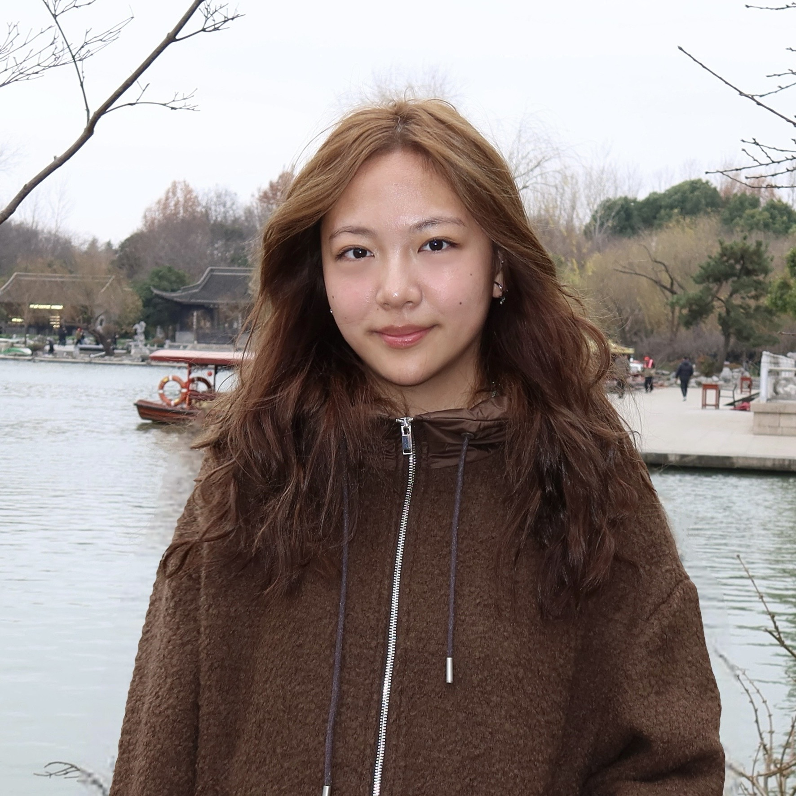

What: A conversation with top debaters about their journey
When: 7/24, 7 PM PST
Where: Online (Informaiton will be sent to email filled out in the form)
Sign-Up Now ⮕Beyond the Ballot is a FREE Q&A webinar with college students that have previously debated. You can hear about their experience, the effect that debate has had on them, and more through our webinar!
